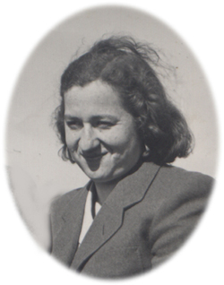
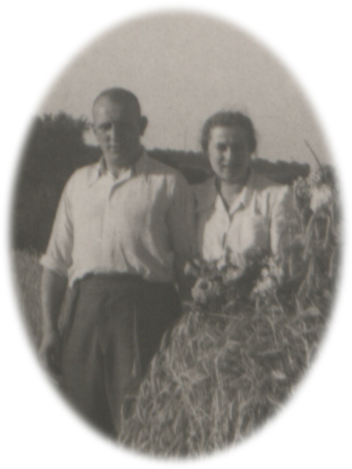
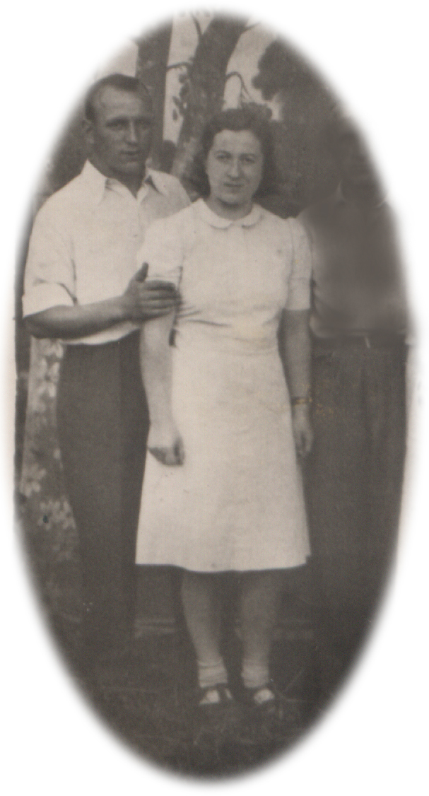
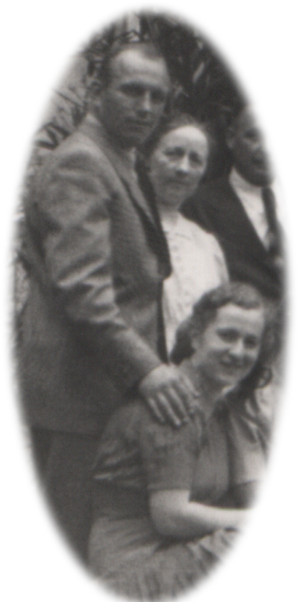

|  | Halina Pietraszewska urodziła się i mieszkała przy ul. Grzegórzeckiej 12, w kamienicy rodzinnej. Od wczesnej młodości pracowała w sławnej na cały Kraków piekarni. Potem stała się właścicielką rodzinnego interesu i prowadziła go samodzielnie aż do śmierci. |
|
Nie wyszła za mąż, lecz przez całe dorosłe życie związana była z Feliksem Pietraszewskim, kuzynem (jej ojciec i jego ojciec byli braćmi). Halina i Feliks otrzymali dyspensę na zawarcie małżeństwa mimo pokrewieństwa, lecz do ślubu nie doszło. Feliks mieszkał jednak z Halą w tym samym mieszkaniu. Zajmowali dwa różne (przechodnie) pokoje. |
 |
|
W młodości uchodzili nawet za parę idealną. Mówiło się o nich: Hala z Felkiem, Felek z Halą. Byli nierozłączni. |
 |
|  |
Parę musiały łączyć silne więzy, gdyż nigdy się nie rozstawali, choć - w starszym wieku - nieustannie kłócili. |
| wróć do poprzedniej strony |